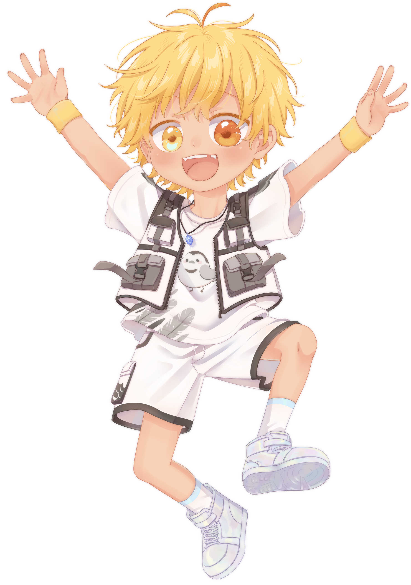
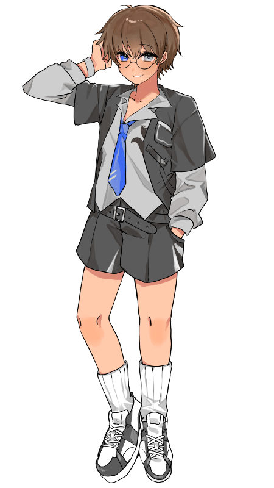
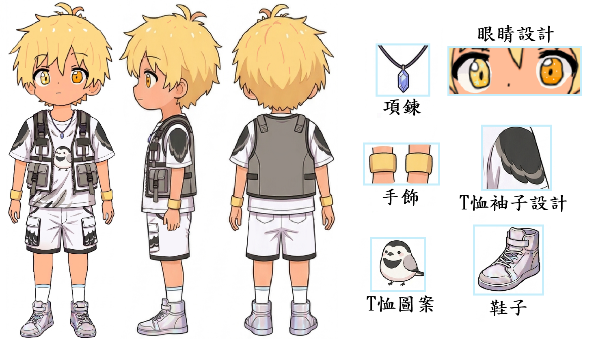
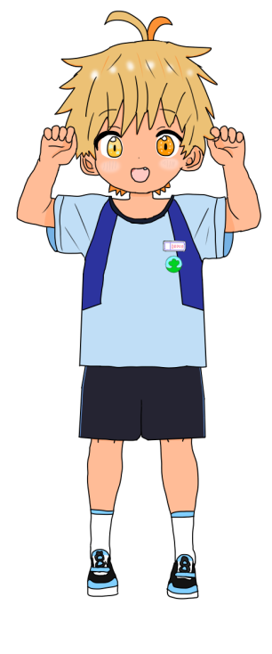
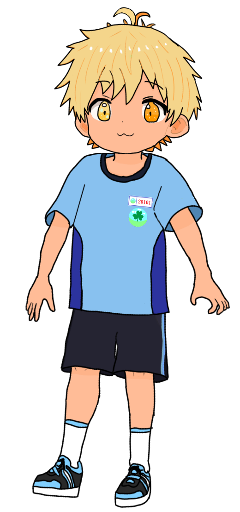
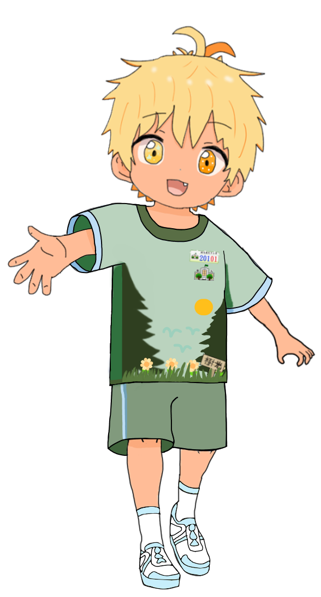
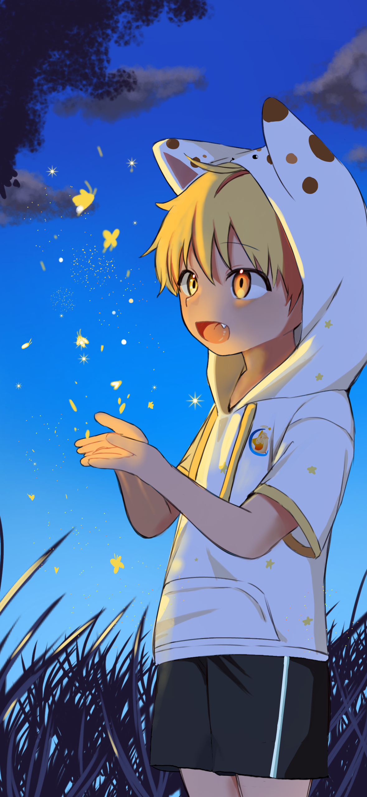

.png)


| 性別 | 男生 |
| 年齡 | 7歲 |
| 身高 | 122cm |
| 體重 | 25kg |
| 生日 | 8月14日 |
| 星座 | 獅子座 |
| 血型 | AB型 |
| 代表色 |
馬卡龍藍
|

星希羽 ACE Ai Voice System V1.5.2
是由星樂之夢開發並營運的男童聲虛擬歌手，基於使用 ACE Studio 歌聲合成引擎製作，萌音與稚音由不同的台灣小學生錄製。
🎵 VOICE CUTE DEMO (萌音)
🎵 VOICE LIVELY DEMO (稚音)

歷史概要
星希羽的起源可追溯至 2022 年，當時創作者 Kai 受到 DeepVocal 歌手「空詩音レミ」啟發，於 2022 年 11 月 27 日創作出虛擬角色「小希」，並於 2023 年 4 月更名為「耀光」。同年自由之光啟動虛擬歌手研發計劃，原先考慮使用 Synthesizer V，後因成本與技術問題轉向 DeepVocal。不過該企劃於 2023 年 11 月終止。
2023 年 12 月，自由之光重新啟動計劃，推出男女雙小學生角色虛擬歌手，男性為「星希羽」，繼承部分「耀光」設定，女性為「星彗羽」。
2024 年 2 月 22 日開設「星樂之夢工作室」，並於 4 月轉用 ACE Studio 進行開發。2024 年 8 月 14 日，星希羽正式發佈 1.0 版本及首支原創曲《星の夜》，由自由之光代理經營。
2025 年 2 月 22 日正式由星樂之夢工作室接手並與自由之光共同營運。
2026 年 2 月 2 日起星樂之夢停止了星希羽 V1 官方活動及聲庫維護，3 月 1 日星希羽 V2 專案啟動新聲優徵選開始，4 月 9 日自由之光退出營運，4 月 30 日星希羽V2開始測試，6 月 11 日正式發行二週年紀念 EP《羽翼》並展開星希羽 V2 封測，7 月 31 日推出星希羽V1.5.2正式版，並宣布V1.5.2版的Voice Style，Ian錄製的聲音為Cute聲線(萌音)，新中之人錄製的聲音為Lively聲線(稚音)。

中之人與形象設計來源
- 活動名稱：Ian
- 生日：4 月 9 日
- 聲音錄製日期：2023 年 1 月 21 日
- 錄製年齡：11 歲
💫 星希羽的角色形象設計靈感源自於 聲音提供者 Ian (Cute Voice)。
在角色塑造初期，參考了其活潑、開朗、調皮的個性特質作為創作靈感。

形象3視圖展示


圖繪專區




